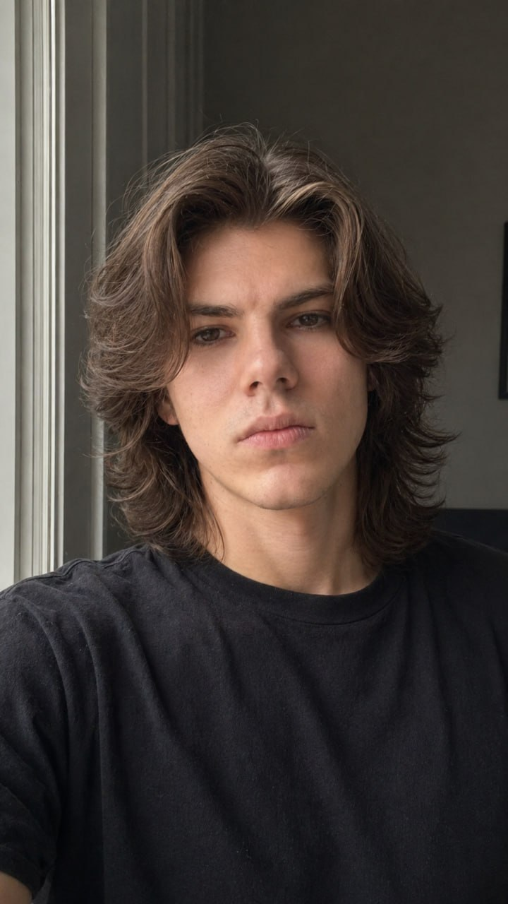

Video Content Producer · Personal Brand Content
Video Content That Builds Personal Brands and Tells Local Stories.
London, Ontario–based content producer creating visual content for public figures, professionals and local businesses — combining concept refinement, location planning, filming, editing and final visual details.
